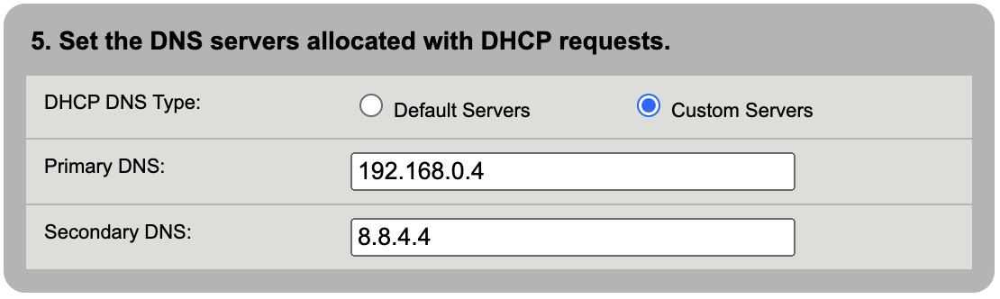
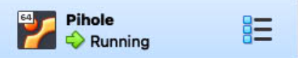
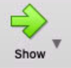

Pihole
Info
Pihole is used as a network wide Ad blocker using DNS.
Setup
Download and Install
Download and install the latest version of VirtualBox from https://www.virtualbox.org/wiki/Downloads
Create a Virtualbox VM
Open Virtualbox and click 'New':
Enter these settings:
- Name:
PiHole - Machine Folder:
/Users/macmini/VirtualBox VMs - Type:
Linux - Version:
Ubuntu (64-bit)
(these are purposefully low-powered settings, it’s designed for a Raspberry Pi, so a powerful VM is not needed)
- Memory:
1 GB - Storage:
10 GB - Network:
Bridged - CPU Execution cap:
50%
Add ISO as a boot medium
Download ISO of LTS edition from https://ubuntu.com/download/server
- Settings of VM -> Storage
- Controller: IDE -> Empty
- Click the circle CD icon and pick ‘choose a disk file…’
- Pick the downloaded ISO
- Click OK
- Start VM in headless mode (click arrow next to start -> headless mode)
Install Ubuntu Server with default settings, pihole user, password pihole
- When asked for the network settings, take note of the MAC address and add a IP reservation to modem settings
- After applying assigned IP, reset the VM and restart setup. This will force the VM to get a static IP. If this doesn't work, continue with setup, and do “configure a static IP for VM'' setup below
Configure a Static IP for the VM
-
Set static IP on Modem via MAC address (MAC address listed under
$[ip addr]) -
RUN in terminal of PiHole VM:
sudo nano /etc/netplan/00-installer-config.yaml -
Copy these contents into the file that is generated, change IP address as needed
# This is the network config written by 'subiquity' network: version: 2 ethernets: enp0s3: addresses: - **IP ADDRESS SET ON MODEM**/24 gateway4: 10.0.1.1 nameservers: addresses: - 10.0.1.53 - 8.8.4.4 -
RUN in terminal of PiHole VM:
sudo netplan generatesudo netplan applyreboot
Install PiHole
- RUN in terminal of PiHole VM:
More details on installation can be found at https://github.com/pi-hole/pi-hole/#curl--ssl-httpsinstallpi-holenet--bash
curl -sSL https://install.pi-hole.net | bash
Set DHCP Server
- Open modem web UI 192.168.0.1
- Advanced Setup -> DHCP Settings -> 5. Set the DNS servers allocated with DHCP requests
- Change radio button to
Custom Servers -
Enter VM IP address as 'Primary DNS', and Open DNS backup server (8.8.4.4) as 'Secondary DNS'

-
Click
Apply
Set the VM to auto-login
https://askubuntu.com/a/819154
-
RUN in terminal of PiHole VM:
sudo systemctl edit getty@tty1.service -
Edit the file that is generated with these contents, change username to username of VM user (
piholein this case):[Service] ExecStart= ExecStart=-/sbin/agetty --noissue --autologin pihole %I $TERM Type=idle -
Save with Ctrl+X
- Reboot machine and see if it auto-logs in as Pihole user
Set the VM to auto-launch in headless mode on Mac login
Download the script vboxlaunchagent.sh from https://www.whatroute.net/software/vboxlaunchagent.sh.zip
Directions from this website:
LaunchAgents are configured with an Apple plist XML file installed in the users Library/LaunchAgents folder. When the user logs in to their account on the Mac, launchd will inspect these plist files and invoke the required program with specified arguments.
It can get a bit tricky to create a plist manually. They have very fussy and very unforgiving syntax requirements. This shell script will create the plist and install it in the LaunchAgents directory.
You can download the script from vboxlaunchagent.sh. Unzip the file and copy the script to a suitable directory on your machine.
Run the script using this syntax:
-
Find the name of the VM: In a terminal on macOS, run:
VBoxManage list vmsShould result in output similar to:
macmini@macserver ~ % VBoxManage list vms "Pihole" {c7ac734f-3fc7-4645-997b-3c78ef32d8f4}In this example, Pihole is the name of the VM.
-
In a terminal, run
replacing ‘VMName’ with the name of the VM from the previous stepsh vboxlaunchagent.sh --headless --verbose "VMName" -
Reboot the Mac and ensure the VM auto-starts on login
Troubleshooting Sites not Loading
Pihole is a tracking and ad-blocker. Because of this, some sites may not load, or be missing content.
Temporarily Disable Pihole
If this is a one-off thing that you need to load, you can temporarily disable Pihole across the whole network.
- Open the PiHole Web UI
- Click 'Disable'
- Choose an amount of time to disable. 5 minutes is usually sufficent.
PiHole is now disabled, and will be automatically re-enabled once the time elapses.
Add a site to the whitelist
- Open the PiHole Web UI
- Click 'Whitelist'
-
Type the domain where you are encountering issues in the 'Domain' field.
Add any comments as needed
-
Check the 'Add domain as wildcard' box
- Click 'Add to Whitelist'
Use the Audit Log
Audit Log will show the top allowed and blocked queries with quick access to blacklist or whitelist them
- Open the PiHole Web UI
- Click 'Tools' -> 'Audit Log'
Updating Pihole (Pihole and underlying Ubuntu OS)
If you see red text at the bottom of the PiHole web UI ‘Update Available’, it needs an update. This is currently a manual process, work in progress to automate it. There are two options, both do exactly the same thing. The SSH option may be easier.
Via SSH
Pihole Updates
-
Open a Terminal and enter command:
ssh pihole@pi.hole
If you get a message similar to:
The authenticity of host 'pi.hole (192.168.0.4)' can't be established. ED25519 key fingerprint is SHA256:jWxxjslC9ObhMty4d0UNERghKP6UWmetfEj80CKW6QY. This host key is known by the following other names/addresses: ~/.ssh/known_hosts:8: 192.168.0.4 Are you sure you want to continue connecting (yes/no/[fingerprint])?This is likely because you have not connected to the PiHole VM using SSH previously, and your computer cannot verify the authenticity of the server computer.
Verify the IP address is what you expect (in this example,
192.168.0.4) and if it’s correct, typeyesat the prompt.After you have sone this once, you likely will not have to do it again, unless the fingerprint key changes.
-
At the prompt
pihole@pi.hole's password:enter the PiHole user password. Once successfully connected, you should see a prompt similar topihole@pihole:~$. You are now SSHed into the PiHole VM! -
Run command
pihole -up - If prompted
[sudo] password for pihole:enter the PiHole user password - Wait for it to update. On success, you should see
[✓] Everything is up to date!
Ubuntu Updates
It’s also a good idea to update the underlying Ubuntu instance periodically, especially if there is a notice then you logged into the Pihole VM similar to:
91 updates can be applied immediately.
9 of these updates are standard security updates.
To do this:
- Run
sudo apt upgrade -
You may be prompted:
Enter YAfter this operation, 430 MB of additional disk space will be used. Do you want to continue? [Y/n] -
Wait for it to update. This may take a while, depending on the number of updates.
Via Apple Remote Desktop
Pihole Updates
- Open Apple Remote Desktop
- Select
MacServerfrom All Computers - Click on
Controlor from the taskbar, or chooseInteract > Control - A new window will open with the MacServer display.
- From the Dock, Applications Folder or Spotlight, open
VirtualBox - Ensure
Piholeis selected in the sidebar

- Click
Show
- A new window will open with the PiHole VM.
- In that new window, ensure you have a
pihole@pihole:~$prompt. If you do not, press Enter a few times to get to a new line. - Run command
pihole -up - If prompted
[sudo] password for pihole:enter the PiHole user password - Wait for it to update. On success, you should see
[✓] Everything is up to date!
Ubuntu Updates
It’s also a good idea to update the underlying Ubuntu instance periodically, especially if there is a notice then you logged into the Pihole VM similar to:
91 updates can be applied immediately.
9 of these updates are standard security updates.
To do this:
- Run
sudo apt upgrade -
You may be prompted:
Enter YAfter this operation, 430 MB of additional disk space will be used. Do you want to continue? [Y/n] -
Wait for it to update. This may take a while, depending on the number of updates.